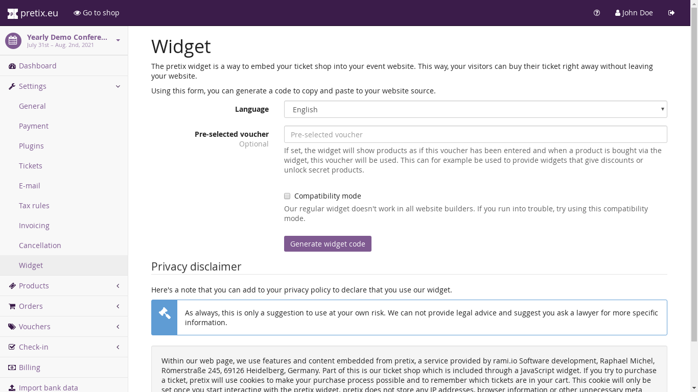

Embeddable Widget¶
If you want to show your ticket shop on your event website or blog, you can use our JavaScript widget. This way, users will not need to leave your site to buy their ticket in most cases. The widget will still open a new tab for the checkout if the user is on a mobile device.
To obtain the correct HTML code for embedding your event into your website, we recommend that you go to the “Widget” tab of your event’s settings. You can specify some optional settings there (for example the language of the widget) and then click “Generate widget code”.
{kind=link}
You will obtain two code snippets that look roughly like the following. The first should be embedded into the
<head> part of your website, if possible. If this inconvenient, you can put it in the <body> part as well:
<link rel="stylesheet" type="text/css" href="https://eventyay.com/demo/democon/widget/v1.css">
<script type="text/javascript" src="https://eventyay.com/widget/v1.en.js" async></script>
The second snippet should be embedded at the position where the widget should show up:
<pretix-widget event="https://eventyay.com/demo/democon/"></pretix-widget>
<noscript>
<div class="pretix-widget">
<div class="pretix-widget-info-message">
JavaScript is disabled in your browser. To access our ticket shop without JavaScript,
please <a target="_blank" href="https://eventyay.com/demo/democon/">click here</a>.
</div>
</div>
</noscript>
Note
You can of course embed multiple widgets of multiple events on your page. In this case, please add the first snippet only once and the second snippets once for each event.
Note
Some website builders like Jimdo have trouble with our custom HTML tag. In that case, you can use
<div class="pretix-widget-compat" …></div> instead of <pretix-widget …></pretix-widget> starting with
pretix 1.14.
Example¶
Your embedded widget could look like the following:
Styling¶
If you want, you can customize the appearance of the widget to fit your website with CSS. If you inspect the rendered
HTML of the widget with your browser’s developer tools, you will see that nearly every element has a custom class
and all classes are prefixed with pretix-widget. You can override the styles as much as you want to and if
you want to go all custom, you don’t even need to use the stylesheet provided by us at all.
SSL¶
Since buying a ticket normally involves entering sensitive data, we strongly suggest that you use SSL/HTTPS for the page that includes the widget. Initiatives like Let’s Encrypt allow you to obtain a SSL certificate free of charge.
All data transferred to pretix will be made over SSL, even if using the widget on a non-SSL site. However, without using SSL for your site, a man-in-the-middle attacker could potentially alter the widget in dangerous ways. Moreover, using SSL is becoming standard practice and your customers might want expect see the secure lock icon in their browser granted to SSL-enabled web pages.
By default, the checkout process will open in a new tab in your customer’s browsers if you don’t use SSL for your
website. If you confident to have a good reason for not using SSL, you can override this behavior with the
skip-ssl-check attribute:
<pretix-widget event="https://eventyay.com/demo/democon/" skip-ssl-check></pretix-widget>
Always open a new tab¶
If you want the checkout process to always open a new tab regardless of screen size, you can pass the disable-iframe
attribute:
<pretix-widget event="https://eventyay.com/demo/democon/" disable-iframe></pretix-widget>
Pre-selecting a voucher¶
You can pre-select a voucher for the widget with the voucher attribute:
<pretix-widget event="https://eventyay.com/demo/democon/" voucher="ABCDE123456"></pretix-widget>
This way, the widget will only show products that can be bought with the voucher and prices according to the voucher’s settings.
Disabling the voucher input¶
If you want to disable voucher input in the widget, you can pass the disable-vouchers attribute:
<pretix-widget event="https://eventyay.com/demo/democon/" disable-vouchers></pretix-widget>
Filtering products¶
You can filter the products shown in the widget by passing in a list of product IDs:
<pretix-widget event="https://eventyay.com/demo/democon/" items="23,42"></pretix-widget>
Alternatively, you can select one or more categories to be shown:
<pretix-widget event="https://eventyay.com/demo/democon/" categories="12,25"></pretix-widget>
Multi-event selection¶
If you want to embed multiple events in a single widget, you can do so. If it’s multiple dates of an event series, just leave off the series attribute:
<pretix-widget event="https://eventyay.com/demo/series/"></pretix-widget>
If you want to include all your public events, you can just reference your organizer:
<pretix-widget event="https://eventyay.com/demo/"></pretix-widget>
There is an optional style parameter that let’s you choose between a monthly calendar view, a week view and a list
view. If you do not set it, the choice will be taken from your organizer settings:
<pretix-widget event="https://eventyay.com/demo/series/" style="list"></pretix-widget>
<pretix-widget event="https://eventyay.com/demo/series/" style="calendar"></pretix-widget>
<pretix-widget event="https://eventyay.com/demo/series/" style="week"></pretix-widget>
If you have more than 100 events, the system might refuse to show a list view and always show a calendar for performance reasons instead.
You can see an example here:
You can filter events by meta data attributes. You can create those attributes in your order profile and set their values in both event and series date settings. For example, if you set up a meta data property called “Promoted” that you set to “Yes” on some events, you can pass a filter like this:
<pretix-widget event="https://eventyay.com/demo/series/" style="list" filter="attr[Promoted]=Yes"></pretix-widget>
Dynamically opening the widget¶
You can get the behavior of the pretix Button without a button at all, so you can trigger it from your own code in response to a user action. Usually, this will open an overlay with your ticket shop, however in some cases, such as missing HTTPS encryption on your case or a really small screen (mobile), it will open a new tab instead of an overlay. Therefore, make sure you call this in direct response to a user action, otherwise most browser will block it as an unwanted pop-up.
- window.PretixWidget.open(target_url[, voucher[, subevent[, items[, widget_data[, skip_ssl_check]]]]])¶
- Arguments:
target_url (
string()) – The URL of the ticket shop.voucher (
string()) – A voucher code to be pre-selected, ornull.subevent (
string()) – A subevent to be pre-selected, ornull.items (
array()) – A collection of items to be put in the cart, of the form[{"item": "item_3", "count": 1}, {"item": "variation_5_6", "count": 4}]widget_data (
object()) – Additional data to be passed to the shop, see below.skip_ssl_check (
boolean()) – Whether to ignore the check for HTTPS. Only to be used during development.
Dynamically loading the widget¶
If you need to control the way or timing the widget loads, for example because you want to modify user data (see below) dynamically via JavaScript, you can register a listener that we will call before creating the widget:
<script type="text/javascript">
window.pretixWidgetCallback = function () {
// Will be run before we create the widget.
}
</script>
If you want, you can suppress us loading the widget and/or modify the user data passed to the widget:
<script type="text/javascript">
window.pretixWidgetCallback = function () {
window.PretixWidget.build_widgets = false;
window.PretixWidget.widget_data["email"] = "test@example.org";
}
</script>
If you then later want to trigger loading the widgets, just call window.PretixWidget.buildWidgets().
Waiting for the widget to load¶
If you want to run custom JavaScript once the widget is fully loaded, you can register a callback function. Note that this function might be run multiple times, for example if you have multiple widgets on a page or if the user switches e.g. from an event list to an event detail view:
<script type="text/javascript">
window.pretixWidgetCallback = function () {
window.PretixWidget.addLoadListener(function () {
console.log("Widget has loaded!");
});
}
</script>
Passing user data to the widget¶
If you display the widget in a restricted area of your website and you want to pre-fill fields in the checkout process with known user data to save your users some typing and increase conversions, you can pass additional data attributes with that information:
<pretix-widget event="https://eventyay.com/demo/democon/"
data-attendee-name-given-name="John"
data-attendee-name-family-name="Doe"
data-invoice-address-name-given-name="John"
data-invoice-address-name-family-name="Doe"
data-email="test@example.org"
data-question-L9G8NG9M="Foobar">
</pretix-widget>
This works for the pretix Button as well, if you also specify a product. Currently, the following attributes are understood by pretix itself:
data-emailwill pre-fill the order email field as well as the attendee email field (if enabled).data-question-IDENTIFIERwill pre-fill the answer for the question with the given identifier. You can view and set identifiers in the Questions section of the backend.Depending on the person name scheme configured in your event settings, you can pass one or more of
data-attendee-name-full-name,data-attendee-name-given-name,data-attendee-name-family-name,data-attendee-name-middle-name,data-attendee-name-title,data-attendee-name-calling-name,data-attendee-name-latin-transcription. If you don’t know or don’t care, you can also just pass a string asdata-attendee-name, which will pre-fill the last part of the name, whatever that is.data-invoice-address-FIELDwill pre-fill the corresponding field of the invoice address. Possible values forFIELDarecompany,street,zipcode,cityandcountry, as well as fields specified by the naming scheme such asname-titleorname-given-name(see above).countryexpects a two-character country code.If
data-fix="true"is given, the user will not be able to change the other given values later. This currently only works for the order email address as well as the invoice address. Attendee-level fields and questions can always be modified. Note that this is not a security feature and can easily be overridden by users, so do not rely on this for authentication.
Any configured pretix plugins might understand more data fields. For example, if the appropriate plugins on pretix Hosted or pretix Enterprise are active, you can pass the following fields:
If you use the campaigns plugin, you can pass a campaign ID as a value to
data-campaign. This way, all orders made through this widget will be counted towards this campaign.If you use the tracking plugin, you can enable cross-domain tracking. To do so, you need to initialize the pretix-widget manually. Use the html code to embed the widget and add one the following code snippets. Make sure to replace all occurrences of <MEASUREMENT_ID> with your Google Analytics MEASUREMENT_ID (UA-XXXXXXX-X or G-XXXXXXXX)
Please also make sure to add the embedding website to your Referral exclusions in your Google Analytics settings.
If you use Google Analytics 4 (GA4 – G-XXXXXXXX):
<script async src="https://www.googletagmanager.com/gtag/js?id=<MEASUREMENT_ID>"></script> <script type="text/javascript"> window.dataLayer = window.dataLayer || []; function gtag(){dataLayer.push(arguments);} gtag('js', new Date()); gtag('config', '<MEASUREMENT_ID>'); window.pretixWidgetCallback = function () { window.PretixWidget.build_widgets = false; window.addEventListener('load', function() { // Wait for GA to be loaded if (!window['google_tag_manager']) { window.PretixWidget.buildWidgets(); return; } var clientId; var sessionId; var loadingTimeout; function build() { // use loadingTimeout to make sure build() is only called once if (!loadingTimeout) return; window.clearTimeout(loadingTimeout); loadingTimeout = null; if (clientId) window.PretixWidget.widget_data["tracking-ga-id"] = clientId; if (sessionId) window.PretixWidget.widget_data["tracking-ga-sessid"] = sessionId; window.PretixWidget.buildWidgets(); }; // make sure to build pretix-widgets if gtag fails to load either client_id or session_id loadingTimeout = window.setTimeout(build, 2000); gtag('get', '<MEASUREMENT_ID>', 'client_id', function(id) { clientId = id; if (sessionId !== undefined) build(); }); gtag('get', '<MEASUREMENT_ID>', 'session_id', function(id) { sessionId = id; if (clientId !== undefined) build(); }); }); }; </script>If you use Universal Analytics with
gtag.js(UA-XXXXXXX-X):<script async src="https://www.googletagmanager.com/gtag/js?id=<MEASUREMENT_ID>"></script> <script type="text/javascript"> window.dataLayer = window.dataLayer || []; function gtag(){dataLayer.push(arguments);} gtag('js', new Date()); gtag('config', '<MEASUREMENT_ID>'); window.pretixWidgetCallback = function () { window.PretixWidget.build_widgets = false; window.addEventListener('load', function() { // Wait for GA to be loaded if (!window['google_tag_manager']) { window.PretixWidget.buildWidgets(); return; } // make sure to build pretix-widgets if gtag fails to load client_id var loadingTimeout = window.setTimeout(function() { loadingTimeout = null; window.PretixWidget.buildWidgets(); }, 1000); gtag('get', '<MEASUREMENT_ID>', 'client_id', function(id) { if (loadingTimeout) { window.clearTimeout(loadingTimeout); window.PretixWidget.widget_data["tracking-ga-id"] = id; window.PretixWidget.buildWidgets(); } }); }); }; </script>If you use ``analytics.js (Universal Analytics):
<script> (function(i,s,o,g,r,a,m){i['GoogleAnalyticsObject']=r;i[r]=i[r]||function(){ (i[r].q=i[r].q||[]).push(arguments)},i[r].l=1*new Date();a=s.createElement(o), m=s.getElementsByTagName(o)[0];a.async=1;a.src=g;m.parentNode.insertBefore(a,m) })(window,document,'script','https://www.google-analytics.com/analytics.js','ga'); ga('create', '<MEASUREMENT_ID>', 'auto'); ga('send', 'pageview'); window.pretixWidgetCallback = function () { window.PretixWidget.build_widgets = false; window.addEventListener('load', function() { // Wait for GA to be loaded if (!window['ga'] || !ga.create) { // Tracking is probably blocked window.PretixWidget.buildWidgets() return; } var loadingTimeout = window.setTimeout(function() { loadingTimeout = null; window.PretixWidget.buildWidgets(); }, 1000); ga(function(tracker) { if (loadingTimeout) { window.clearTimeout(loadingTimeout); window.PretixWidget.widget_data["tracking-ga-id"] = tracker.get('clientId'); window.PretixWidget.buildWidgets(); } }); }); }; </script>
Changed in version 3.6: Dynamically opening the widget has been added in pretix 3.6.